Tutorial 15, Part A – Cylinders, Spheres, and Other 3D
Effects
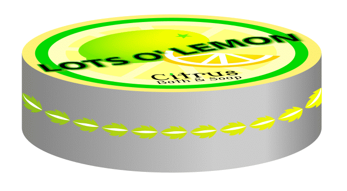
Inkscape’s drawing
and painting tools allow you to create the effect of depth with drop
shadow and color gradient capabilities. Cylindrical containers, spheres,
and vases become solid when they cast a shadow on a background or reflect
a source of illumination, enhancing the effect of a three-dimensional
environment.
In this tutorial, you’ll learn how to do the following:
Bend text.
Style text outlines.
Create a 3-D cylinder out a rectangle and ellipses.
Add gradient coloring to create illumination on a curved surface.
Use a Pattern Along Path technique to create and place a decorative band
around the middle of a cylinder.
This tutorial is the first of two parts in which you will create a series
of 3-D objects for a poster. Each object is made using separate sets of
drawing techniques to create the illusion of depth.
Getting Started
In this tutorial, you’ll create a cylindrical object using the
ellipse, path union, and gradient tools.
Start Inkscape.
Download art file Tutorial15A_end.svg and
store it in a convenient location.
File > Open file Tutorial15A_end.svg. This file displays a
completed illustration of a soap can, soap balls, and a vase.
If you like, choose View > Zoom > Zoom Out to reduce the view of
the finished artwork, adjust the window size, and leave it on your screen
as you work. (Use the Select tool () to select and move the artwork
where you want it in the window.) If you don’t want to leave the
image open, choose File > Close.
Resource: For an illustration of the finished artwork in this
tutorial, see the top of this page.
Drawing the Canister Lid
To begin working, you’ll open an existing art file to which you will
add objects that require a 3-D look.
File > Save As… and name the copy of the file
Lemon.svg.
You will stylize the logo. With the Select tool (),
select the logo text.
From here on, we will call logo text logotype. In graphic design,
a logotype is a single piece of text that prints a logo or emblem, or is a
logo if the figure is centered around a company name or initials.
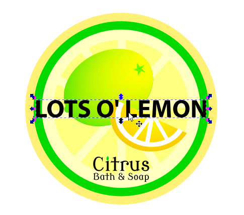
Selecting the logotype.
Move the logotype off to the side of the artwork. This way, you can
modify it without being distracted by artwork details underneath.
Moving the logotype off the artwork.
Choose Object > Fill and Stroke…, click on the Stroke
style tab.
Give the lettering a yellow stroke by <Shift>-clicking on the
yellow swatch in the Color palette at the bottom of the work window.
Give the stroke a Width of 1.500 px.
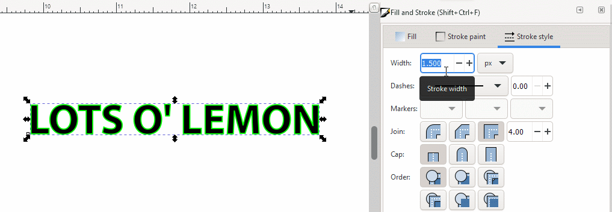
Giving the logotype a 1.5-pixel thick yellow
stroke.
You will now make a second stroke that borders the first yellow
stroke.
The second stroke will actually be path copies of the original text
characters that you will resize and color using the Linked Offset
tool.
Choose Path > Linked Offset. The logotype is enclosed in a
bounding box, an offset handle appears, and the Node tool is activated
(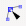).
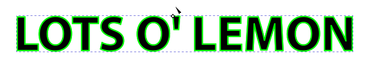
Linked Offset tool activated, offset handle visible, and
the Select tool cursor becomes the Node tool cursor.
Slowly drag the offset handle to the left or up. You will see a
second yellow-stroke and black-filled text-figure start to appear from
behind the original text. Stop when you see the black fill appear.
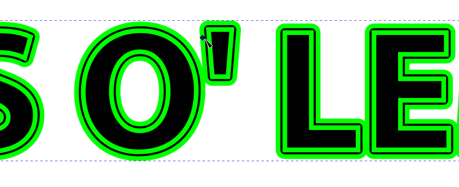
Dragging the offset handle off to a side to expand the
copied path.
Delete the outer yellow stroke by <Shift>-clicking on the
none color swatch () at the left end of the Color palette. The
underlying black color fill appears.
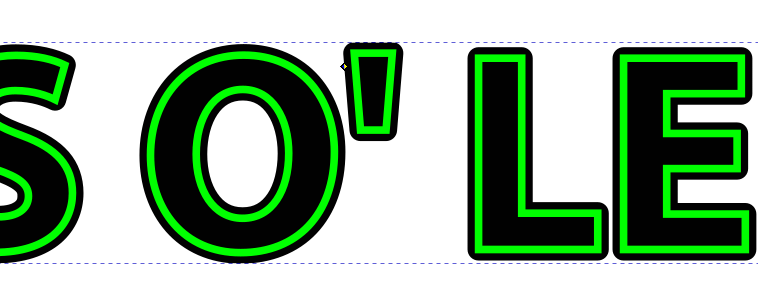
Deleting the outer yellow stroke.
With the Node tool () still active, drag the offset handle inwards into
the figure to shrink the width of the black outer stroke. Stop at what you
feel is a reasonable thinness.
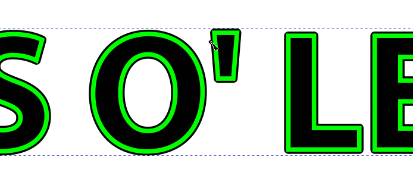
Making the black second stroke thinner.
Make a drop shadow. Choose Filters > Shadows and Glows > Drop
Shadow….
In the Drop Shadow dialog box, click on the Blur color
tab to bring up the Blur color palette. Type 8bbe1bff into the
RGBA text box to give the shadow a dark lemon-lime color and press
<Enter> to set the hexadecimal color value.
Click on the Options tab to bring up the Options
settings dialog box. Set the Blur radius (px) to 0.5, the
Horizontal offset (px) to 0.7, and the Vertical offset
to 0.7. The Shadow type should show a default setting of
Outer. Change the value to Outer if the setting is something
else.
Click on the Live preview checkbox to see the resulting drop
shadow before you actually apply the shadow effect. If you like what you
see, click on the Apply button, then Close.
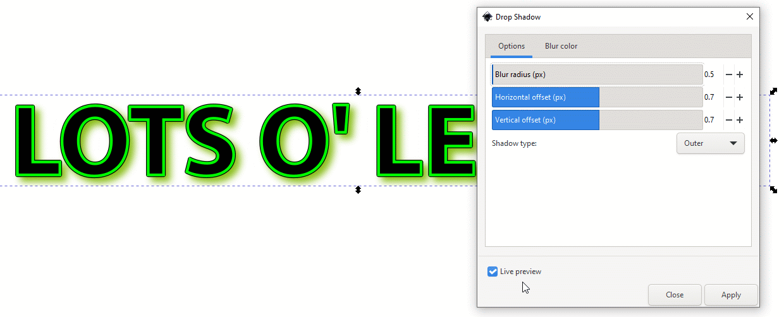
Applying the drop shadow filter effect.
You will now bend the logotype. With the Select tool ()
active, choose Path > Path Effects… > Bend. The Bend
path tool appears.
Click on the Edit on-canvas button in the Path Effects
dialog box to activate the Bend path editing tool.
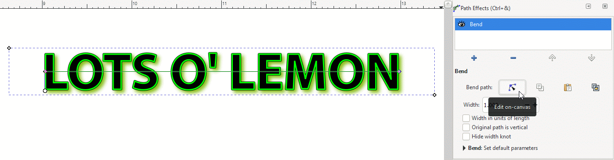
Bend path tool.
Click-drag the left end node on the Bend tool bar down about
the height of a letter. The whole line of text tilts.
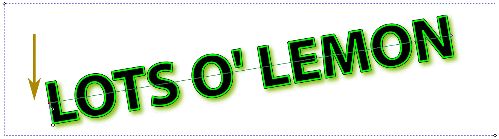
Tilting the logotype down on the left end.
With the Bend path editing tool still active, click on the
middle of the Bend tool bar and drag it down so the left-hand
direction handle is parallel with the bottom (and top) side of the bounding
box.
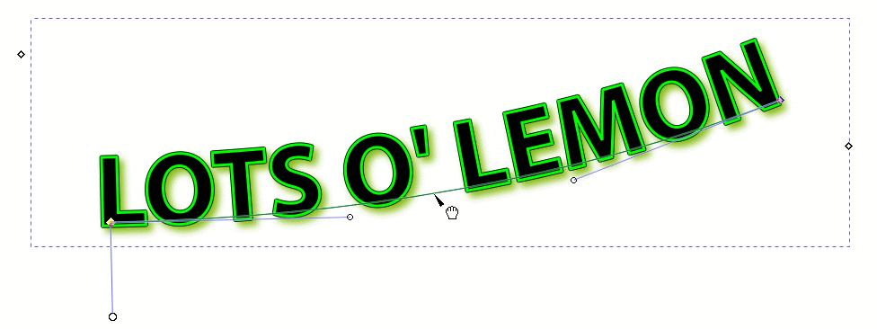
Bending the left half of the logotype path.
With the Bend path editing tool still active, click on the
node at the end of the right-hand direction handle and bring it up until
the handle is parallel to the top (and bottom) side of the bounding box.
Move both direction handle nodes until they are at the center line of the
bounding box, producing a symmetrical bend in the logotype.
Bending the right half of the logotype path.
Click on the Select tool (), marquee-select the logotype (you
will also be selecting any paths located lower in the image stack), group it
with <Ctrl>-G, and move the it onto the artwork. Position it until
you like what you see.
Moving the logotype.
Reposition and resize the logotype as you see fit. Once done, click
away from the artwork to deselect it.
Finished lid artwork.
File >Save the artwork.
Drawing a Cylinder
In this section, you will draw the cylindrical body of the soap
canister.
You will start by grouping all the components that make up the lid
design to make it easy to manipulate the entire object. You will then
rotate the canister lid design by 15 degrees anticlockwise to suggest that
you are viewing it from a casual, off-angle perspective.
Marquee-select the canister lid artwork with the Select tool ()
and <Ctrl>-G to group all the image components of the lid.
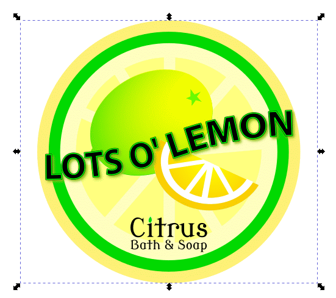
Grouping the lid components.
With the lid figure still selected, choose Object >
Transform… and click on the Rotate tab. Set the Angle
to 15, make sure the unit of measurement is degrees (°),
select the Anticlockwise direction icon (), and then click on the Apply button.
Rotate the lid 15 degrees anticlockwise.
You will use guidelines to make sure that the canister body has the
same width as the lid.
Drag a guideline from the left ruler to the right side of the lid and
drag another guideline to the left side of the lid.
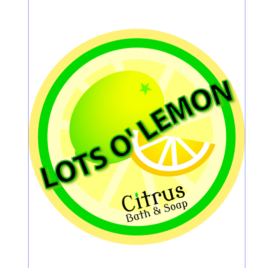
Dragging guidelines to the left and right sides of the lid
figure.
You will now bring your point of view down so it does not seem as if
you are looking straight down from the top center of the lid but somewhere
closer to the plane of the table that the canister is sitting on. (You will
draw the table top later.)
Select the lid artwork (reselect it if it has been deselected), and choose
Object > Transform… and click on the Scale tab. Set the
Height to 30 and make sure that the unit of measurement box
to the right of the Width textbox is set to percent (%).
Click on the Apply button.
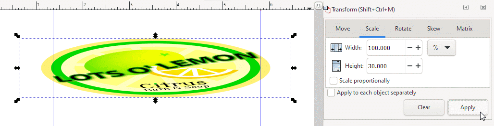
Scaling the lid height down to 30 percent.
The lid figure has expanded in size a little bit as an artifact from
the rescaling process. <Ctrl>-drag or <Ctrl>-<Shift>-drag a
sizing handle to resize the lid so it fits exactly inside the left and right
guidelines. (<Ctrl>-<Shift>-drag resizes an object from its
center.)
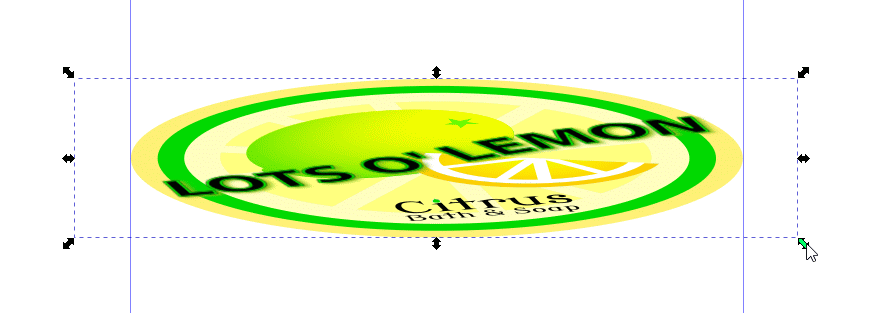
Resizing the lid so it fits exactly within the two
guidelines.
The canister lid is now ready to have a cylindrical body fitted to
it.
Drawing a Cylinder
In this section, you draw a rectangle that will become the body of the
cylinder, reshape a circle into an ellipse to make the bottom of the cylinder,
and join them together. You will then add the lid figure you just drew ontop
to make the complete canister.
Select the Rectangle tool (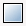).
If the Snap Controls Bar isn’t visible, choose View >
Show/Hide, and check the Snap Controls Bar checkbox. Select Enable
snapping (%) (), Snap bounding boxes (), Snap bounding box corners (), and Snap guides ().
Draw a rectangle of moderate height (your choice) and width enough to
fit between the guidelines. Guideline indicator messages will let you know
when rectangle bounding box corners have snapped to the guidelines.
With the rectangle still selected, click on the 50% Gray color
swatch in the Color palette at the bottom of the work window, then
<Shift>-click on the none color swatch () at the
left end of the Color palette so the rectangle will not have a border.
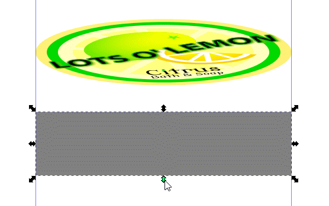
Making the rectangle for the cylinder body.
Select the Ellipse tool ().
In the Snap Controls Bar, keeping Enable snapping (%)
() active, turn off Snap bounding boxes (), turn on Snap nodes, paths, and handles (), and turn on Snap smooth nodes, incl. quadrant points
of ellipses ().
Keep Snap guides () turned on.
You will now draw the bottom rim of the canister.
Below the rectangle you just drew, draw a circle, using
<Ctrl>-drag, that fits inside the two guidelines. If you don’t
get the diameter right, switch to the Select tool () and
<Ctrl>-drag a sizing handle until you get a circle that fits exactly
between the two guidelines. Guideline indicator messages will let you know
when the circle touches a guideline.
With the circle still selected, give it a 50% Gray color fill
and a stroke of none as you had done for the rectangle in Step 4.
You will now transform the circle into an ellipse having the same
curvature as the canister lid. Remember that the original lid design was a
circle that you transformed into an ellipse with a height of 30 percent of
its original diameter. You will do the same for the gray circle you just
drew.
With the circle still selected, choose Object > Transform…,
click on the Scale tab, and change the Height from 100
to 30 percent. (Make sure that the unit of measurement is percent
(%)) Click on the Apply button.
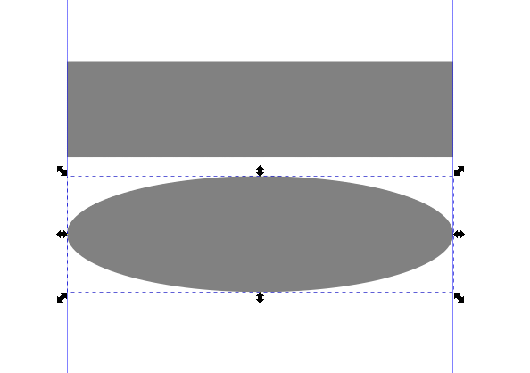
Making the bottom of the cylinder.
Make a duplicate of the ellipse with <Ctrl>-D and move it
further down from the first ellipse. You will use the duplicate shortly to
make a decorative band around the middle of the cylinder.
Select the first ellipse and move it up until its major diameter
coincides with the bottom side of the rectangle. (In geometrical terms,
this diameter of an ellipse is called its major axis; the shorter diameter
is called the minor axis.)
The rectangle and ellipse below are partially transparent to show their
placement.
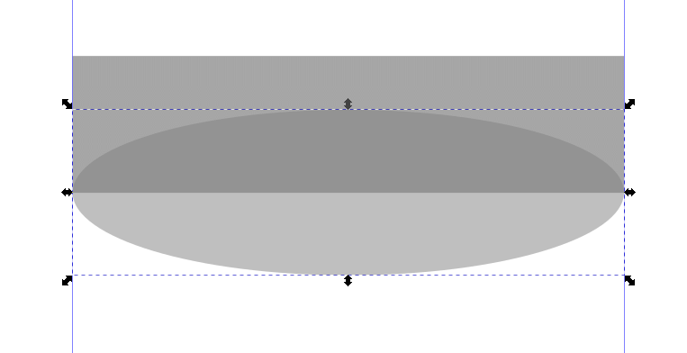
Positioning the ellipse to make the bottom of the
cylinder.
You will turn both objects into one by creating a path union.
Group-select the rectangle and ellipse by <Shift>-clicking
them.
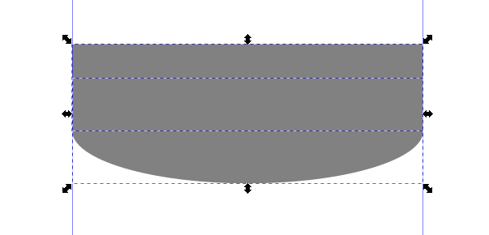
Group-selecting the rectangle and ellipse to make paths and
then a path union out of them.
Choose Path > Union. Both rectangle and ellipse objects are
converted into paths. Both paths are then joined into one path. Note that
there is only one bounding box where there were two.
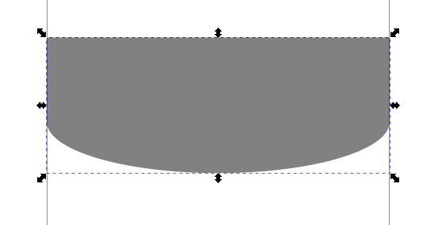
Rectangle and ellipse made into a path union.
Move the canister lid artwork down until its major axis (it is an
ellipse) coincides with the top side of the canister body object.
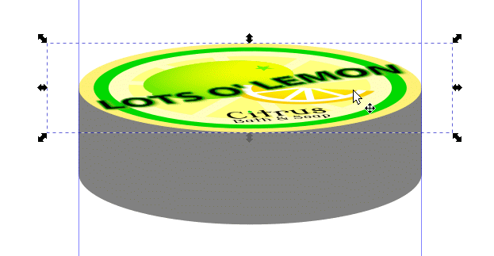
Placing the lid on top of the cylinder body.
Note how the left and right guidelines help you to maintain a constant
width of the canister lid top, body, and bottom. The artwork now looks
like a well put-together canister.
To enhance the 3-D effect, you will give the canister body a
gradient, suggesting lighting from the side reflecting off a cylindrical
shape.
If the Fill and Stroke… dialog box isn’t active, then
choose Object > Fill and Stroke…, click on the Linear
gradient icon. The cylinder component is given a default color
gradient.
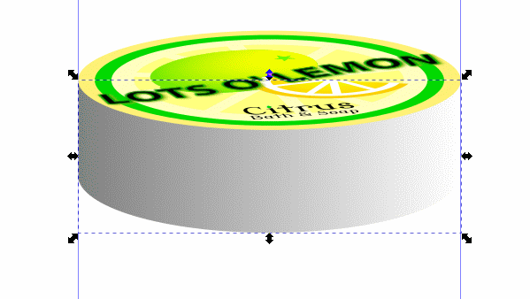
Selecting the Linear gradient color fill.
Select the Create and edit gradients tool () in the toolbox. The Edit gradient tool line appears
across the cylinder body.
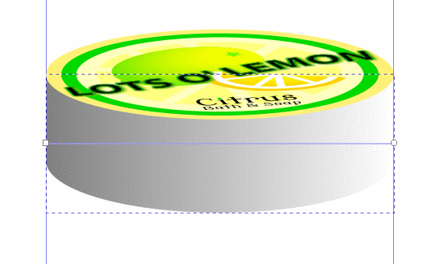
Selecting the Linear gradient tool.
You will now add a gradient stop to the middle of the Edit
gradient tool line. Double-click on the middle of the line with the
Gradient tool cursor. A diamond appears where you double-clicked.
You can change the color at this stop to add extra coloration to the
gradient.
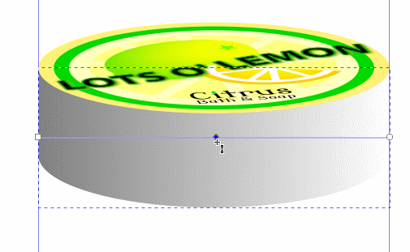
Adding a gradient stop to the middle of the gradient tool
bar.
The gradient will be created deliberately off-center to simulate a
source of lighting that is somewhere to the right side of the artwork.
To start, click on the right-hand gradient stop to make it active.
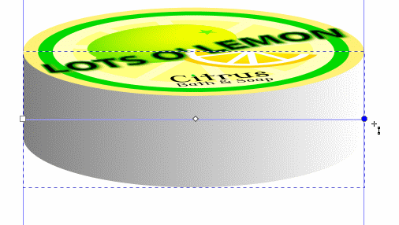
Clicking on the right-hand gradient stop to select
it.
Click on the Dropper tool icon (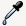) in
the toolbox and then click on the 50% Gray color swatch in the Color
palette. The cylinder is now a medium gray color all the way across its
width.
Click on the middle gradient stop, then click on the Dropper
tool icon (). Click on the 20% Gray color swatch in the Color
palette. The body now has a central area of light gray, suggesting
illumination from a light source in front of the artwork (perhaps,
even you!).
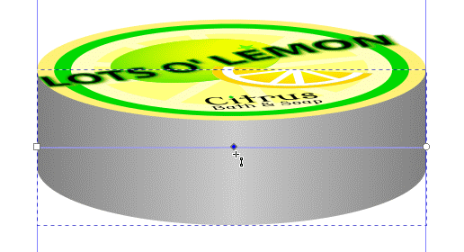
Choosing 20 percent grey for the middle gradient
stop.
Now spread out the light gray area to suggest a more distant, diffuse
source of light.
Create a second gradient stop to the right of the middle stop.
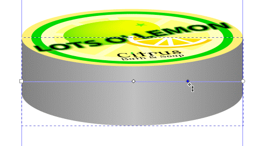
Adding a second gradient stop to the gradient tool
bar.
With the new stop still selected, click on the Dropper tool
icon (), and then on the 20% Gray color swatch in the Color
palette.
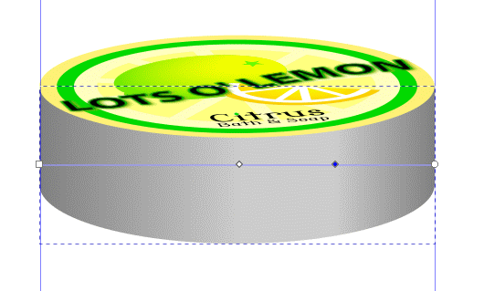
Giving the second internal stop a 20 percent light gray
color.
Click-drag both middle gradient stops to the right to move the
whole light gray area to the right. Let your sense of how the illuminated
area should look in guiding how you move the stops.
Note: if you prefer to work with just one stop in the middle of
the gradient, click on the stop you want to delete, and then click on the
Delete stop icon (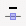) in the Gradient Tool Controls
Bar.
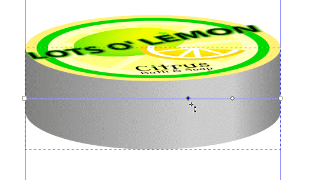
Moving both internal gradient stops to the
right.
The logotype is a little large for the size of the canister lid. It
should be reduced in size for a better fit.
Select the canister lid artwork, ungroup the logotype and the rest of
the artwork by clicking on the Ungroup selected groups icon (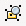). Select
the logotype and adjust its size, maintaining its height-width aspect ratio
by <Ctrl>-dragging sizing handles until you are satisfied with the
adjustment.
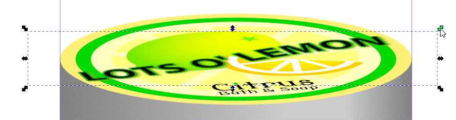
Resizing the logotype.
When you are satisfied with your results, choose Edit > Deselect
to deselect the artwork. Keep the guidelines because you’ll need them
in the next section.
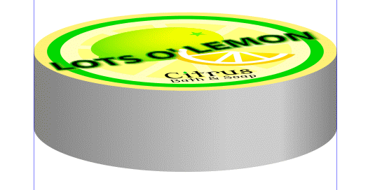
Finished cylinder.
File > Save.
Drawing a 3-D Decorative Band for the Cylinder
The body of the canister looks three-dimensional courtesy of the gradient
coloration attached to it. It also looks monolithic and uninspiring. A
well-drawn decorative band placed around its middle gives it appeal and adds
to the 3-D effect the artwork should have.
Download the art file Leaf.svg and store it in
a convenient location.
File > Open file Leaf.svg, choose Edit > Select All, and
then choose Edit > Copy to copy the artwork to the clipboard.
The artwork in this file consists of a stylized leaf made of a leaf
body and a central vein, both of which are ungrouped objects. The artwork
appears large because the artboard was resized to fit the leaf and Inkscape
automatically resizes the artboard to fit the work window.
Choose Edit > Select All to group-select the leaf body and vein
objects, then choose Edit > Copy to copy them to the clipboard.
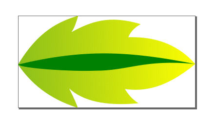
Leaf motif.
If the Inkscape window from the previous section is still active,
make it visible by pressing <Alt>-<Tab> however many times you
need to bring it up using the Windows screen-switching function.
Position the Select tool cursor () to a side of the canister artwork and press <Ctrl>-V
to paste the leaf image at that location. Note that it appears much smaller
than it did in its source file. Inkscape automatically rescaled it to the
dimensions of the current work window.
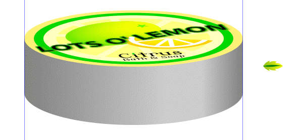
Leaf image pasted next to canister artwork.
Select the duplicate ellipse that was made in the last section.
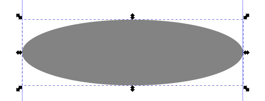
Selecting the duplicate ellipse.
With the duplicate ellipse selected, choose Path > Object to Path
to convert it from an (ellipse) object to a path in preparation for
deleting portions of the circumference to make it a “half-path”,
if you will.
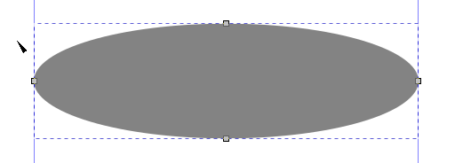
Converting the ellipse into a path.
Select the Node tool () and position it over the upper left
quadrant of the ellipse. It’s in a good position when the hand icon
appears next to the arrowhead.
Click on the curve to select it. The two nodes that begin and end
the curve turn blue, signaling that the curve has been selected.
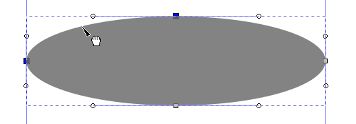
Positioning the Node tool cursor on and selecting the
curve.
Click on the Delete segment between two non-endpoint nodes
icon () in the Node Tool
Controls Bar to delete that particular portion of the ellipse’s
circumference.
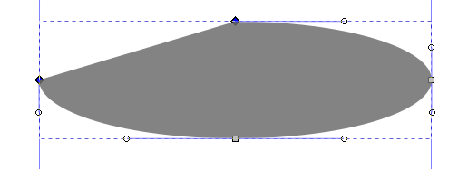
Deleting the upper left quadrant of the ellipse
path.
Repeat Steps 8 and 9 for the upper right quadrant of the ellipse
path.
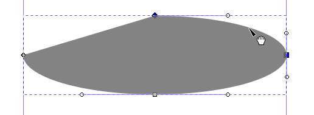
Selecting the upper right quadrant of the
ellipse.
You now have half an ellipse path left. This half-path will define
route that the stylized leaves will take as they take their promenade along
the mid-section of the canister body.
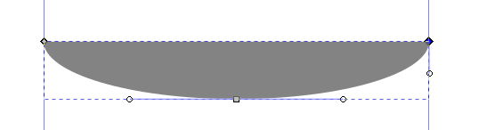
Half an ellipse.
Click on the Select tool (), and then click on the none
color swatch () at the left end of the Color palette. The ellipse disappears,
and yet, there is still a bounding box and nodes — the half-path
still exists.
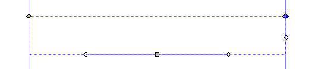
Hidden half-path.
<Shift>-click on the black color swatch next to the none
color swatch to make the half-path (not the fill color) visible. In the
figure below, it has a stroke thickness of 1.500 pixels.
Make a duplicate of the half-path with <Ctrl>-D. You will use one
half-path to apply the leaf body to and the other one to apply the leaf vein
to, and then merge the two half-paths to create the band.
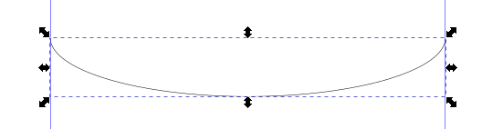
Giving the half-path a black stroke.
With the Select tool (), click on the leaf body (not the
vein) to select it.
Press <Ctrl>-C to copy it to the clipboard in preparation for
applying the Pattern Along Path effect.
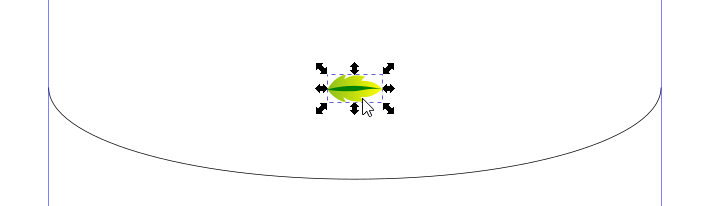
Selecting and copying the leaf body to the
clipboard.
Choose Path > Path Effects… to bring up the Live Path
Effects Selector menu. Click on the Pattern Along Path icon.
In the Pattern Along Path dialog box, select Repeated for
Pattern copies, and then click on the Link to path in
clipboard icon (). The leaf stroke appears in
black as a repeated pattern along the ellipse half-path. The leaves have no
fill. You will take care of that shortly.
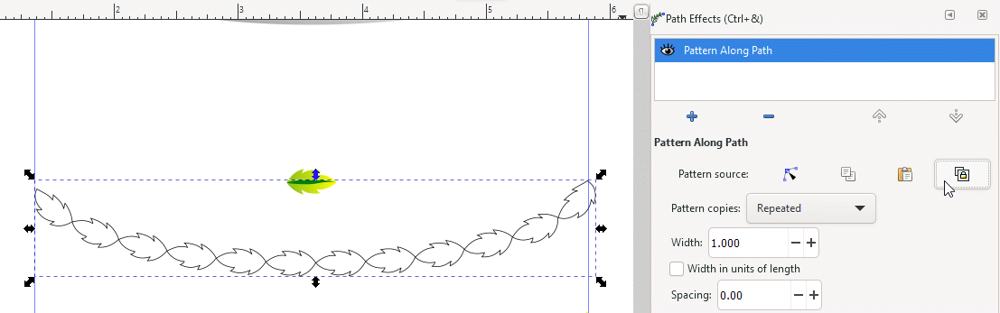
Apply the Pattern Along Path function with just the
leaf body.
You will now fill the procession of leaves with a gradient.
Choose Object > Stroke and Fill…, click on the Gradient
tab in the Stroke and Fill dialog box, and then click on the
Create and edit gradients tool () in the toolbox. The default gradient (black to white) might
appear across the leaves. If your result is different, don’t worry,
it is not a concern at all. You will take care of it in the next few
steps.
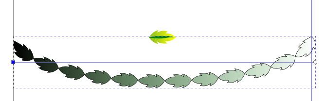
Default gradient across all leaf motifs.
Click on the right end gradient stop with the Edit gradient
tool to select it. The gradient stop node turns blue to show that it has
been selected.
Click on the yellow color swatch in the Color palette to give the leaves
a yellow fill color.
Right end of gradient starts with yellow.
Click on the left end gradient stop with the Edit gradient
tool to select it.
Type 8bbe1bff into the RGBA text box in the Fill
dialog box to give the left end of the gradient a dark lemon yellow
color.
Left end of gradient starts with dark lemon
yellow.
<Shift>-click on the none color swatch () at the
left end of the Color palette to hide the leaves’ black stroke.
Hiding the leaves’ black stroke.
You will now add the green leaf vein to the caravan of marching
leaves.
Blown up diagram of a composite pattern.
Select the green leaf vein and press <Ctrl>-C to copy it to the
clipboard. You will apply that object to the duplicate curved path you
created earlier. Make sure that Pattern copies is set to
Repeated in the Pattern Along Path dialog box.
Selecting the green leaf vein to place on the duplicate
path.
The Pattern Along Path function copies and positions the
leaf motif on the curved path. It does not copy the green fill color. It
does, however, use the black stroke color of the curve for the
leaves’ stroke color.
Applying the Pattern Along Path path effect to the
curve.
With the leaf vein parade still selected, click on the green color
swatch in the Color palette to give the veins a green color fill, then
click on the none color swatch () to hide the black stroke.
Leaf veins now have a green color fill and no
stroke.
With the leaf vein pattern still selected (reselect it if it has been
deselected), move it up between the two guidelines until it rests ontop of
the leaf body pattern. Magnify any part of the artwork to help you in
increasing the precision of placement.
Positioning the leaf vein pattern ontop of the leaf body
pattern.
The leaf pattern looks good enough as a tip-to-toe sequence. It might
look a little better with some spacing between leaves. Spacing will be
applied to both the leaf body pattern and the leaf vein pattern separately
— they are separate objects.
Click on an individual leaf body to select it. The whole sequence of
leaves becomes selected.
In the Pattern Along Path dialog box, change the Spacing
from its default of 0.00 to 1.00. The leaf bodies separate
by a small amount of space in between. The leaf veins remain in their
original positions — the leaf vein sequence is an object separate
from the leaf body object and so is not affected by the change in
spacing.
Leaf bodies given spacing, leaf veins no
spacing.
Now select a leaf vein. The whole sequence of leaf veins becomes
selected.
As you did in the previous step, change the Spacing from its
default of 0.00 to 1.00. Now the leaf veins move to coincide
exactly with their corresponding leaf bodies.
Leaf veins given same amount of spacing as the leaf bodies
so they will coincide.
Marquee-select the leaf body and leaf vein patterns and group them
by clicking on the Group selected objects icon () in the Tool Controls Bar.
Move the artwork to the canister and position it so that it is situated
at the middle of the canister body.
Moving the decorative band artwork to the middle of the
canister body.
You will now change the color of the leaf veins to white so the
coloration of the decorative band is more in line with the artwork of the
canister lid.
Select the decorative band. (If the band has been deselected,
reselect it.)
Click on the Ungroup selected groups icon () in the Tool Controls Bar
Select a leaf vein. Then, click on the white color swatch in the
Color palette. All the leaf veins turn white.
Giving the leaf veins a white color fill.
The right-most leaf extends beyond the edge of the canister body. It
needs to be clipped off. You will use the Clip function to
accomplish that task.
Select the Rectangle tool ()
and draw a rectangle. Give it a color fill of none and a thin black
stroke. The rectangle below has a thickness of 1.500 pixels.
Bring up the Snap Controls Bar and select the Enable
snapping (%) (), Snap bounding boxes (), Snap bounding box corners (), and Snap guide ()icons.
The last option allows the rectangle to be snapped precisely to the side of
the canister where the one leaf is sticking out, waiting to be clipped.
Move the rectangle to the right guideline where the right-most leaf
extends beyond the edge of the canister. The rectangle will snap into place
precisely at the guideline.
Drawing the clipping rectangle.
In order for the clipping rectangle to act like a cookie cutter,
it needs to be placed above the cookie to be cut. Click on the Raise
selection to top icon () in the Tool Controls
Bar to put the rectangle at the top of the rectangle-leaf image
stack.
Click on a leaf body to select it (and all other leaf bodies as the
bounding box indicates), and then click on the Lower selection to
bottom icon () to put it underneath the
rectangle in the image stack.
Rectangle at top of image stack, leaf at bottom of image
stack.
Choose Object > Clip > Set Inverse (LPE). The extended portion
of the leaf is clipped off and rendered invisible right at the guideline.
Clipping the right-most leaf.
Press <Esc> to deselect the decorative band.
Deselecting the decorative band.
Click-drag the two guidelines off to the right or left of the work
window — they are no longer needed.
Finished canister artwork.
File > Save, File > Quit to exit Inkscape.
Review Questions
When creating a cylinder, what needs to be done about the angle of the
top surface and the bottom surface?
What are good tools to use to ensure that the top, bottom, and sides of
of cylinder all have matching diameters and widths?
How are gradients helpful in creating a 3-D effect?
What is necessary to have a composite pattern along a path merge
properly?
What can you do if a portion of a pattern along a path extends beyond
where you want it to stop?
Review Answers
Both the top and bottom surfaces of a cylinder need to be shortened
(transformed) by the same angle to produce a consistent shape.
Guidelines are good tools for constraining top and bottom circles or
ellipses to have matching diameters or axes that also match the width of a
cylinder body rectangle.
Gradients give the impression of light reflecting off a surface in
ways that suggest that the surface has depth, is curved, or is at angle to
the eye of the viewer.
Component parts of all motifs must have exactly the same length and
each path for each motif must have exactly the same length and the same
curvature.
You can clip the projecting part of the pattern by 1) drawing a
rectangle or other shape that you can use as a graphical cookie cutter, 2)
placing it over the part of the pattern to clip off, 3) making sure that
the cookie cutter object lies above the object to clip in the image stack,
4) selecting both the cookie cutter object and the object to be clipped,
and 5) choosing Object > Clip > Set Inverse (LPE).

 ) to select and move the artwork
where you want it in the window.) If you don’t want to leave the
image open, choose File > Close.
) to select and move the artwork
where you want it in the window.) If you don’t want to leave the
image open, choose File > Close.{kind=link}
 ) at the left end of the Color palette. The
underlying black color fill appears.
) at the left end of the Color palette. The
underlying black color fill appears.

{kind=link}

 ), Snap bounding boxes (
), Snap bounding boxes ( ), Snap bounding box corners (), and Snap guides ().
), Snap bounding box corners (), and Snap guides (). ).
). ), and turn on Snap smooth nodes, incl. quadrant points
of ellipses ().
Keep Snap guides () turned on.
), and turn on Snap smooth nodes, incl. quadrant points
of ellipses ().
Keep Snap guides () turned on. ) in the toolbox. The Edit gradient tool line appears
across the cylinder body.
) in the toolbox. The Edit gradient tool line appears
across the cylinder body. ) in the Node Tool
Controls Bar to delete that particular portion of the ellipse’s
circumference.
) in the Node Tool
Controls Bar to delete that particular portion of the ellipse’s
circumference. ). The leaf stroke appears in
black as a repeated pattern along the ellipse half-path. The leaves have no
fill. You will take care of that shortly.
). The leaf stroke appears in
black as a repeated pattern along the ellipse half-path. The leaves have no
fill. You will take care of that shortly.
 ) to put it underneath the
rectangle in the image stack.
) to put it underneath the
rectangle in the image stack.{kind=link}